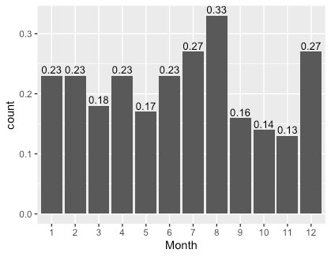
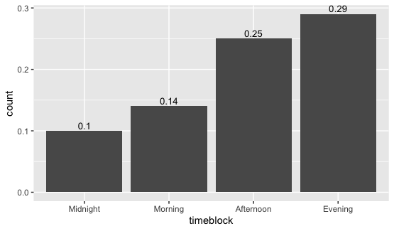
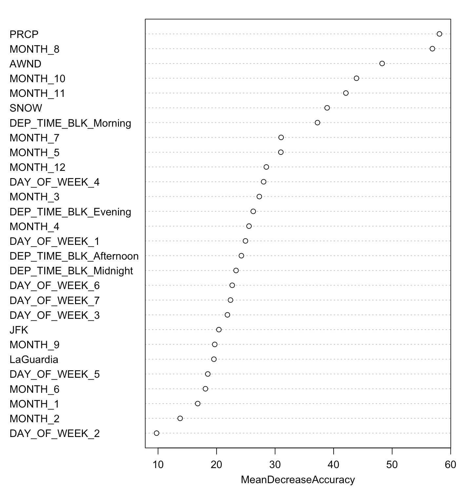
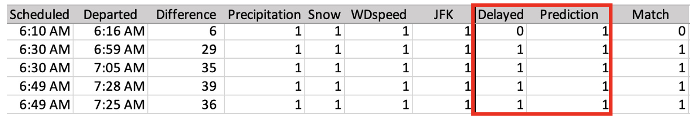

Flight Delay Prediction in NY
Background

Image Credit: pch.vector
Allow me to share a story involving an acquaintance of mine, let’s call him "Joe," who found himself in a situation while in New York. As he hurriedly made his way back to California for a significant wedding event, unforeseen circumstances came into play. His flight experienced an unexpected delay of over an hour, primarily attributed to adverse weather conditions – a blanket of snow covered the region. This delay unfortunately resulted in his tardiness to his own wedding ceremony, an occurrence that understandably left the bride discontented.
However, it's important to recognize that flight delays extend beyond an individual's personal experiences. Situations like Joe's are all too common - flight delays derail travel plans every single day. But what if we could help minimize its impact? This is precisely the reason this chosen subject has been targeted for focus as it holds such significance.
By analyzing weather patterns, historic flight data, and other factors, we aim to give travelers advanced notice of possible disruptions. This will let them make arrangements to avoid missing important events. Our endeavors center around the development of a predictive model designed to anticipate flight delays in the two major airports in New York City, John F. Kennedy International Airport (JFK) and LaGuardia Airport (LGA). We aim to proactively address the challenges posed by flight delays and contribute to a more seamless travel experience for all passengers.
Hypothesis
Before we began, we had two hypotheses about flight delays.
Weather
Ho: Weather would be a big contributor to flight delay
Ha: Weather would not be a big contributor to flight delay
Airport
Ho: JFK has the higher delay rate compared to LGA
Ha: JFK has the higher delay rate compared to LGA
Dataset
Our data was sourced from Kaggle and originated from the U.S. Department of Transportation's (DOT) Bureau of Transportation Statistics (BTS) which tracks the on-time performance of domestic flights operated by large air carriers. This dataset consisted of all flights delayed by departing from both JFK and LGA in 2019. Our target variable was defined as flights delayed for more than 15 minutes.
Data Cleaning
The original data set had over 6+ million data points. To reduce the noise, we cleaned up our data by selecting flights from JetBlue at LaGuardia and JFK airports in NY. With our cleaned data, we split our dataset (46,999 observations) into 76/24 with 76 in training and 24 in testing. We used 5 categorical variables and 7 numerical variables to help us predict our target variable.
Categorical Variable
- Month (12 categories: 1-12)
- Day of Week (7 categories: 1-7)
- Departure Time Block (4 blocks)
- Distance Group (11 categories: 1-11)
- Segment Number (10 categories: 1-10)
Numeric Variable
- Concurrent Flights
- Number of Seats
- Plane Age
- Precipitations
- Snow
- Max Temperature
- Wind Speed
EDA (Exploratory Data Analysis)
Visualizing our data, August has the most delays throughout the year.
We also found that Evening has the most delays throughout the day.
Model Performance
5 different machine learning algorithms were used: logistic regression, naïve bayes, decision tree, KNN, and random forest. Two metrics were used to evaluate the performance of our model, accuracy, and error rate. We noticed that due to a lot of noise in our data, our accuracy suffered.
| Method | Stratified | Accuracy (%) | Error (%) |
|---|---|---|---|
| Logistic Regression | Not Delay | 62.36 | 36.20 |
| Delay | 65.23 | ||
| Naive Bayes | Not Delay | 58.75 | 38.12 |
| Delay | 65.00 | ||
| Decision Tree | Not Delay | 41.09 | 40.58 |
| Delay | 77.74 | ||
| KNN | Not Delay | 64.57 | 35.02 |
| Delay | 65.40 | ||
| Random Forest | Not Delay | 67.32 | 34.19 |
| Delay | 64.29 |
Analysis from Modeling
From our logistic regression model, there is negative correlation between flight delay the other time block. Furthermore, we made a dummy variable for JFK. If the flight was from JFK, we labeled it 1 and if not, the label was 0. From there were able to run the model again and found that LaGuardia Airport had more delays than JFK.
Importance variable plot is an evaluation metric to determine what factors play an important role in the success of the classification of our model. The more the accuracy suffer, the more important the variable is for a successful classification.
Based on the importance variable plot, here are the top five contributors to flight delays.
- Rain
- August
- Wind Speed
- October
- November
We initially expected that the departure time block between 12 am - 6 am had many flight delays. We didn’t exactly understand why that was the case as it didn’t make sense with the rest of the data. Looking further into the situation, we realized we had the wrong conclusion. In fact, flights between 12 am - 6 pm had a negative correlation with flight delays and at this time block there would be less flight delays.
We wanted to test our model performance with current data, so we used data from flightradar24 and weather underground and this is what we got.
| Tuesday March 8, 2022 | Wednesday March 9, 2022 |
|---|---|
| Temp: 46 / 39 °F | Temp: 41 / 34 °F |
| Accuracy: 48.03% | Accuracy: 87.86% |
Here’s the actual results from that day Wednesday, March 9, 2022.
Conclusion
Here is what we concluded about our hypothesis from our analysis.
Weather
Ho: Weather would be a big contributor to flight delay
Ha: Weather would not be a big contributor to flight delay
Airport
Ho: JFK has the higher delay rate compared to LGA
Ha: JFK has the higher delay rate compared to LGA
Flight prediction is important because it would help airlines be more proactive rather than reactive. We believe that doing flight delay prediction would help airlines be more prepared in the case of a delay and to increase customer satisfaction. We hope that our findings will help JetBlue know which month, day, and time to expect the most delays.
We expected that weather such as snow and rain to have the biggest impacts on flight delays; however, based on our finding, the biggest impact to flight delays were when departures occurred in the mornings between 6am - 12pm. Another impact that played a significant role was flight delays in August due to summer.
Written By: Tiffany Dinh
In Conjunction With: Jiwon Ko, Pei Hsuan Ko, Taeho Lee, Lihong Zhao